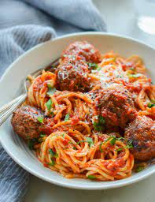

Spaghetti and Meatballs

Description
Spaghetti and meatballs is an Italian and Italian-American dish consisting of spaghetti, tomato sauce and meatballs.
Ingredients
Steps
- Begin with the meatballs: In a large bowl, combine the egg, basil, parsley, oregano, salt, pepper, garlic and water; whisk well.
- Add the meat, breadcrumbs and Parmigiano Reggiano. meatball recipe
- Roll the mixture into golf ball-sized meatballs, and place on an ungreased baking sheet.
- Bake for about 10 minutes, then remove the baking sheet from the oven and use a metal spatula or tongs to turn the meatballs (they will stick a bit but should release easily when you scrape under them with the spatula).
- Put the meatballs back in the oven and cook for another 10 minutes, until they are nicely browned and almost cooked through.
- In the meantime, bring the marinara sauce to a simmer in a large skillet. Taste it and adjust the seasoning if necessary (I usually add a healthy pinch of sugar and some freshly ground black pepper). Transfer the browned meatballs to the marinara sauce, leaving the fat behind. Cover loosely with a lid or foil and simmer for about 10 minutes, until the flavors marry and the meatballs are cooked through. Keep warm until ready to toss with pasta.
- While the meatballs are cooking, bring a large pot of well-salted water to a boil.
- Add the spaghetti and cook until al dente. Drain, then toss with the sauce and meatballs.
Return to Main Page